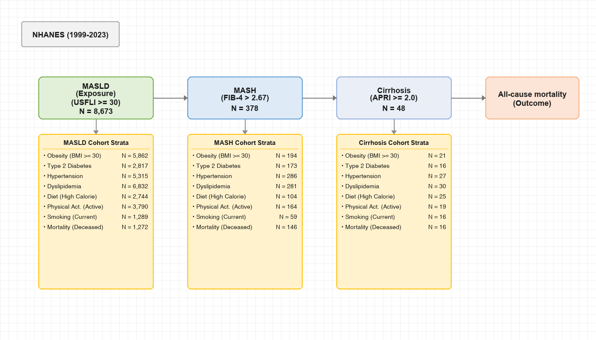
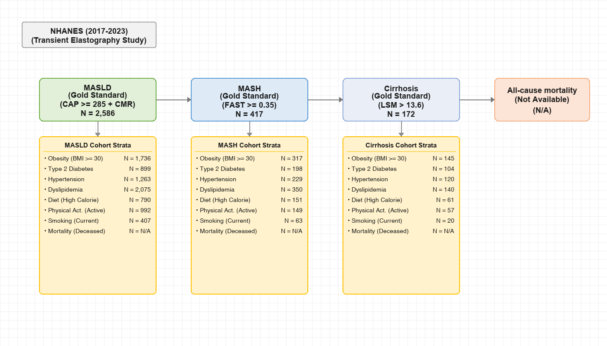
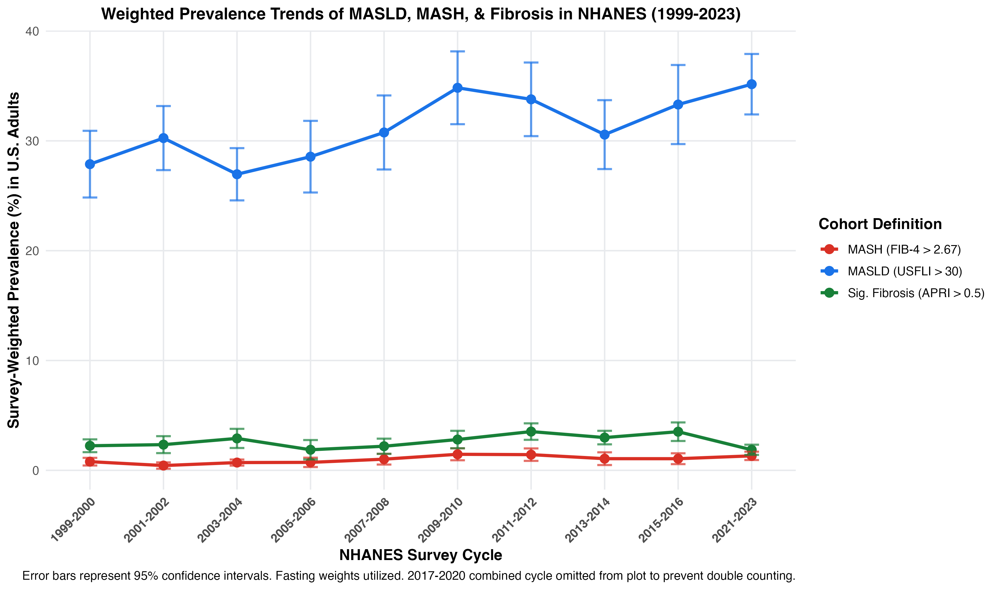

A comparative epidemiological analysis of MASLD, MASH, and Advanced Liver Fibrosis / Cirrhosis cohorts using data from the National Health and Nutrition Examination Survey (NHANES).
Toggle below to compare the cohort inclusion criteria and raw sample sizes (N) of the two parallel study models:

Figure 1. Flowchart of blood-index based cohort selections (USFLI, FIB-4, APRI) for 1999–2023 cycles.

Figure 2. Flowchart of transient elastography based cohort selections (CAP, FAST, LSM) for 2017–2023 cycles.
The primary study evaluates non-invasive blood-based indexes—the U.S. Fatty Liver Index (USFLI > 30) for steatosis [1], FIB-4 > 2.67 for high-risk MASH [2], and APRI thresholds for fibrosis/cirrhosis [3].
Below is the summary table of positive cases (USFLI > 30) and survey-weighted estimates for U.S. adults aged ≥ 20 years:
| NHANES Cycle | Raw USFLI > 30 N | Raw Prevalence (%) | Weighted Prevalence (%) | Weighted Population Size N |
|---|---|---|---|---|
| 1999-2000 | 616 | 34.39% | 27.88% | 54,046,125 |
| 2001-2002 | 701 | 33.65% | 30.25% | 59,380,012 |
| 2003-2004 | 539 | 28.73% | 26.96% | 52,620,852 |
| 2005-2006 | 556 | 29.56% | 28.56% | 57,287,665 |
| 2007-2008 | 786 | 35.07% | 30.76% | 63,044,528 |
| 2009-2010 | 960 | 38.43% | 34.83% | 73,016,619 |
| 2011-2012 | 725 | 33.89% | 33.78% | 70,991,388 |
| 2013-2014 | 688 | 30.67% | 30.57% | 66,190,995 |
| 2015-2016 | 745 | 34.91% | 33.31% | 74,182,474 |
| 2017-2018 | 821 | 38.22% | 35.63% | 80,795,840 |
| 2017-2020 (Pre-Pandemic)* | 1,366 | 38.21% | 36.07% | 82,704,779 |
| 2021-2023 (Post-Pandemic) | 991 | 36.91% | 35.16% | 78,587,877 |
The chart below shows the survey-weighted prevalence trends for MASLD (USFLI > 30), MASH (FIB-4 > 2.67), and Significant Fibrosis (APRI > 0.5) in U.S. adults over time with 95% confidence intervals:

Figure 3. Multi-line longitudinal prevalence trend (weighted %) with 95% confidence intervals.
Below is the integrated comorbidity stratification table for the primary study, presenting the general MASLD cohort (N = 8,673), the MASH cohort (N = 378), the Significant Fibrosis cohort (N = 760), and the Cirrhosis cohort (N = 48) side-by-side:
| Category | Stratum / Subgroup | MASLD Raw N | MASLD Wt % | MASH Raw N | MASH Wt % | Fibrosis Raw N | Fibrosis Wt % | Cirrhosis Raw N | Cirrhosis Wt % |
|---|---|---|---|---|---|---|---|---|---|
| Obesity/BMI | Normal (18.5–24.9) | 409 | 4.00% | 47 | 15.76% | 71 | 9.67% | 5 | 17.96% |
| Overweight (25.0–29.9) | 2,350 | 24.66% | 131 | 34.25% | 246 | 30.09% | 21 | 39.54% | |
| Obese (≥ 30.0) | 5,862 | 71.30% | 194 | 50.00% | 438 | 60.16% | 21 | 42.50% | |
| Underweight (<18.5) | 4 | 0.04% | 0 | 0.00% | 1 | 0.08% | 0 | 0.00% | |
| Missing / Unknown | 48 | -- | 6 | -- | 4 | -- | 1 | -- | |
| Type 2 DM | Diabetes | 2,817 | 26.97% | 173 | 37.98% | 296 | 33.99% | 16 | 27.32% |
| No Diabetes | 5,856 | 73.03% | 205 | 62.02% | 464 | 66.01% | 32 | 72.68% | |
| Missing / Unknown | 0 | -- | 0 | -- | 0 | -- | 0 | -- | |
| Hypertension | Hypertension | 5,315 | 59.31% | 286 | 75.06% | 485 | 62.67% | 27 | 58.20% |
| No Hypertension | 3,354 | 40.69% | 92 | 24.94% | 275 | 37.33% | 21 | 41.80% | |
| Missing / Unknown | 4 | -- | 0 | -- | 0 | -- | 0 | -- | |
| Dyslipidemia | Dyslipidemia | 6,832 | 79.56% | 281 | 75.00% | 586 | 78.83% | 30 | 62.32% |
| No Dyslipidemia | 1,841 | 20.44% | 97 | 25.00% | 174 | 21.17% | 18 | 37.68% | |
| Missing / Unknown | 0 | -- | 0 | -- | 0 | -- | 0 | -- | |
| Diet (Calorie) | Low Calorie (Tertile 1) | 2,744 | 28.02% | 147 | 37.55% | 226 | 28.55% | 10 | 23.63% |
| Medium Calorie (Tertile 2) | 2,743 | 33.50% | 108 | 30.37% | 214 | 29.37% | 11 | 18.22% | |
| High Calorie (Tertile 3) | 2,744 | 38.47% | 104 | 32.08% | 273 | 42.08% | 25 | 58.15% | |
| Missing / Unknown | 442 | -- | 19 | -- | 47 | -- | 2 | -- | |
| Physical Activity | Active | 3,790 | 51.55% | 164 | 46.21% | 377 | 52.53% | 19 | 32.32% |
| Inactive | 3,892 | 48.45% | 170 | 53.79% | 326 | 47.47% | 25 | 67.68% | |
| Missing / Unknown | 991 | -- | 44 | -- | 57 | -- | 4 | -- | |
| Smoking Status | Never Smoker | 4,427 | 54.98% | 147 | 38.88% | 332 | 46.30% | 14 | 42.85% |
| Former Smoker | 2,263 | 28.77% | 147 | 44.84% | 216 | 33.74% | 13 | 24.26% | |
| Current Smoker | 1,289 | 16.25% | 59 | 16.28% | 151 | 19.96% | 16 | 32.89% | |
| Missing / Unknown | 694 | -- | 25 | -- | 61 | -- | 5 | -- | |
| Mortality (1999–2018) | Alive | 5,040 | 84.38% | 129 | 49.32% | 442 | 78.00% | 23 | 50.36% |
| Deceased | 1,272 | 15.62% | 146 | 50.68% | 154 | 22.00% | 16 | 49.64% | |
| Missing / Unknown | 0 | -- | 103 | -- | 0 | -- | 9 | -- |
The gold standard study restricted the sample to the 5,699 adults aged ≥ 20 years in the morning fasting subsample who had valid transient elastography (FibroScan) measurements in the 2017–2020 pre-pandemic and 2021–2023 cycles.
Survey weights were combined to represent the 6-year period:
Below is the summary stratification table of the three gold-standard cohorts, styled symmetrically (Raw N followed by survey-weighted percentage side-by-side for each cohort):
| Category | Stratum / Subgroup | MASLD Raw N | MASLD Wt % | MASH Raw N | MASH Wt % | Cirrhosis Raw N | Cirrhosis Wt % |
|---|---|---|---|---|---|---|---|
| Obesity/BMI | Normal (18.5–24.9) | 139 | 4.42% | 18 | 2.69% | 3 | 1.28% |
| Overweight (25.0–29.9) | 688 | 26.29% | 77 | 17.09% | 22 | 11.50% | |
| Obese (≥ 30.0) | 1,736 | 69.25% | 317 | 79.97% | 145 | 87.21% | |
| Underweight (<18.5) | 2 | 0.04% | 1 | 0.25% | 0 | 0.00% | |
| Missing / Unknown | 23 | -- | 4 | -- | 2 | -- | |
| Type 2 DM | Diabetes | 899 | 29.41% | 198 | 40.51% | 104 | 62.38% |
| No Diabetes | 1,687 | 70.59% | 219 | 59.49% | 68 | 37.62% | |
| Missing / Unknown | 2 | -- | 0 | -- | 0 | -- | |
| Hypertension | Hypertension | 1,265 | 43.07% | 229 | 46.53% | 120 | 65.81% |
| No Hypertension | 1,321 | 56.93% | 188 | 53.47% | 52 | 34.19% | |
| Missing / Unknown | 2 | -- | 0 | -- | 0 | -- | |
| Dyslipidemia | Dyslipidemia | 2,075 | 81.41% | 350 | 86.47% | 140 | 83.50% |
| No Dyslipidemia | 512 | 18.59% | 67 | 13.53% | 32 | 16.50% | |
| Missing / Unknown | 1 | -- | 0 | -- | 0 | -- | |
| Diet (Calorie) | Low Calorie (Tertile 1) | 727 | 28.06% | 96 | 22.30% | 43 | 33.66% |
| Medium Calorie (Tertile 2) | 750 | 31.76% | 113 | 27.98% | 51 | 24.66% | |
| High Calorie (Tertile 3) | 790 | 40.18% | 151 | 49.72% | 61 | 41.68% | |
| Missing / Unknown | 321 | -- | 57 | -- | 17 | -- | |
| Physical Activity | Active | 992 | 50.30% | 149 | 45.83% | 57 | 44.42% |
| Inactive | 1,596 | 49.70% | 268 | 54.17% | 115 | 55.58% | |
| Missing / Unknown | 0 | -- | 0 | -- | 0 | -- | |
| Smoking Status | Never Smoker | 1,446 | 56.70% | 226 | 50.82% | 98 | 55.78% |
| Former Smoker | 734 | 28.52% | 128 | 32.39% | 54 | 33.87% | |
| Current Smoker | 407 | 14.78% | 63 | 16.79% | 20 | 10.35% | |
| Missing / Unknown | 1 | -- | 0 | -- | 0 | -- | |
| Mortality | Alive | N/A | N/A | N/A | N/A | N/A | N/A |
| Deceased | N/A | N/A | N/A | N/A | N/A | N/A | |
| Missing / Unknown | N/A | N/A | N/A | N/A | N/A | N/A |
P_DEMO), linkage of the 2017-2018 subset is not possible using public files. Thus, mortality statistics are marked as N/A.
{kind=link}
{kind=link}
{kind=link}